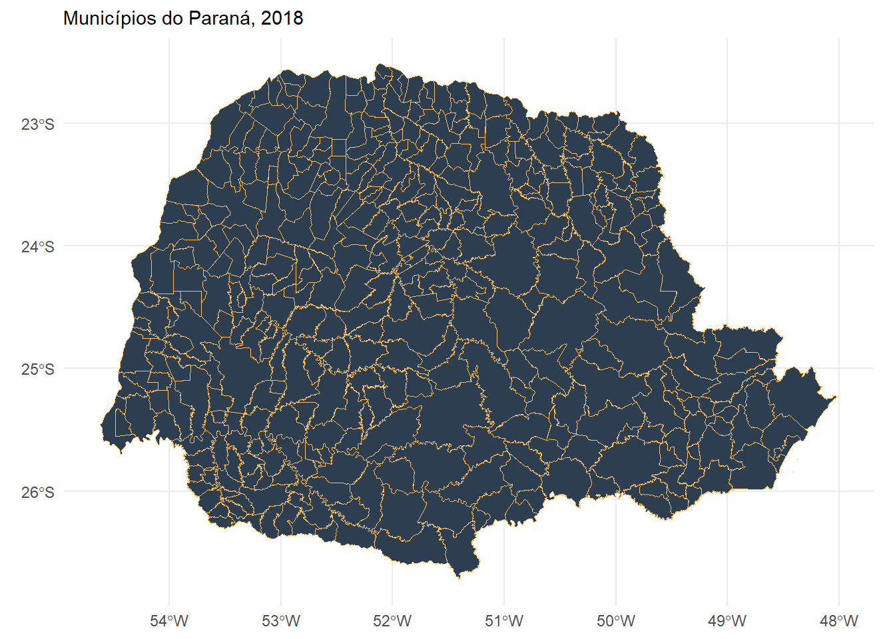
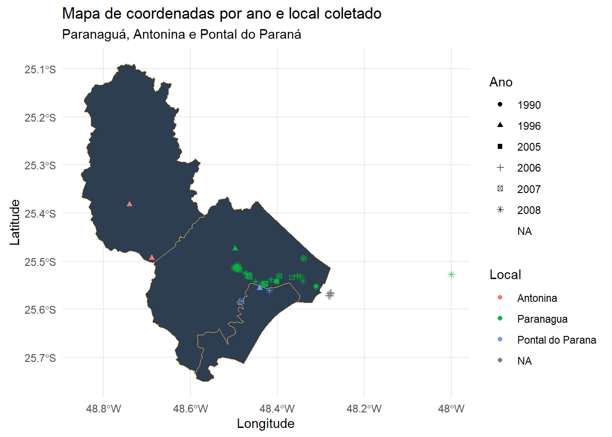
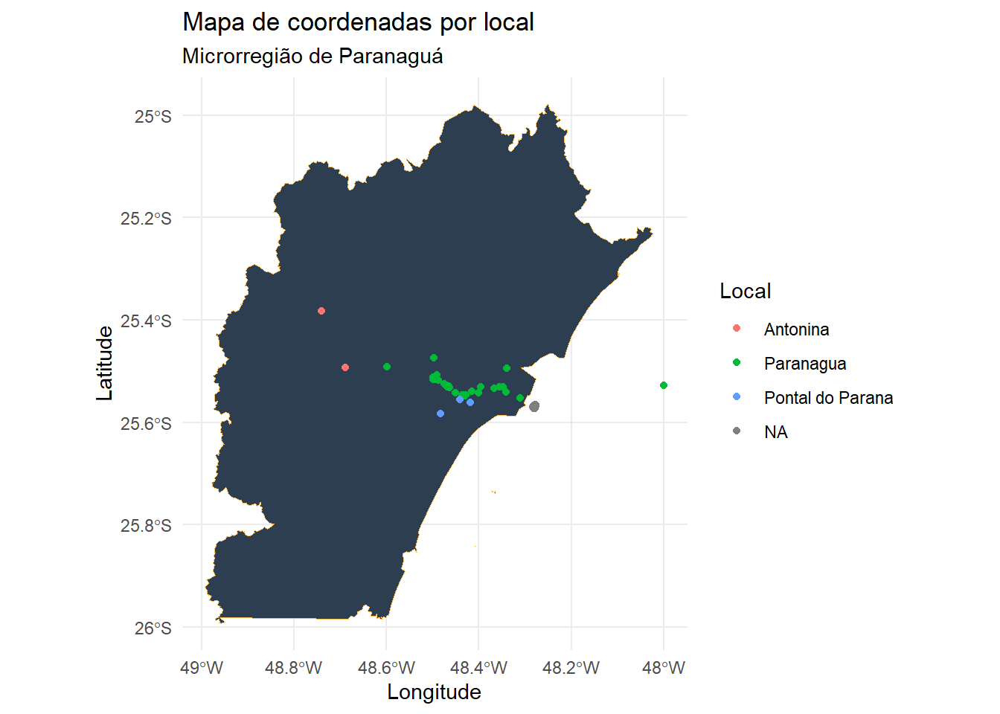

library(mapview)
library(leafem)
library(readxl)
library(leaflet)
library(janitor)
library(geobr)
library(ggplot2)
library(dplyr)ggplot() +
geom_sf(data=all_muni, fill="#2D3E50", color="#FEBF57", size=.15, show.legend = FALSE) +
labs(subtitle="Municípios do Paraná, 2018", size=8) +
theme_minimal()
ggplot() +
geom_sf(data=muni, fill="#2D3E50", color="#FEBF57", size=.15, show.legend = FALSE) +
labs(subtitle="Paranaguá, Antonina e Pontal do Paraná", size=8) +
theme_minimal() +
geom_point(data = ds, mapping = aes(x = longitude, y = latitude,
color = factor(county),
shape = factor(year_collected))) +
xlab("Longitude") +
ylab("Latitude") +
labs(color = "Local" ) +
ggtitle("Mapa de coordenadas por ano e local coletado") +
theme(legend.position="right") +
labs(shape='Ano') 
ggplot() + geom_sf(data=micro[14,], fill="#2D3E50", color="#FEBF57", size=.15, show.legend = FALSE) +
theme_minimal() +
labs(subtitle="Microrregião de Paranaguá", size=8) +
geom_point(data = ds, mapping = aes(x = longitude, y = latitude,
color = factor(county))) +
xlab("Longitude") +
ylab("Latitude") +
labs(color = "Local" ) +
ggtitle("Mapa de coordenadas por local") +
theme(legend.position="right") +
labs(shape='Ano') 
## R version 4.0.2 (2020-06-22)
## Platform: x86_64-w64-mingw32/x64 (64-bit)
## Running under: Windows 10 x64 (build 18362)
##
## Matrix products: default
##
## locale:
## [1] LC_COLLATE=Portuguese_Brazil.1252 LC_CTYPE=Portuguese_Brazil.1252
## [3] LC_MONETARY=Portuguese_Brazil.1252 LC_NUMERIC=C
## [5] LC_TIME=Portuguese_Brazil.1252
##
## attached base packages:
## [1] stats graphics grDevices utils datasets methods base
##
## other attached packages:
## [1] leafpop_0.0.5 leaflet.extras_1.0.0 rio_0.5.16
## [4] geobr_1.3 leafem_0.1.1 mapview_2.7.8
## [7] htmltools_0.5.0 leaflet_2.0.3 ggmap_3.0.0
## [10] spData_0.3.8 raster_3.3-7 sp_1.4-2
## [13] sf_0.9-4 ggpubr_0.4.0 xts_0.12-0
## [16] zoo_1.8-8 dygraphs_1.1.1.6 dplyr_1.0.0
## [19] janitor_2.0.1 gganimate_1.0.6 DT_0.14
## [22] plotly_4.9.2.1 ggplot2_3.3.2 kableExtra_1.1.0
## [25] gifski_0.8.6 readxl_1.3.1
##
## loaded via a namespace (and not attached):
## [1] colorspace_1.4-1 ggsignif_0.6.0 rjson_0.2.20
## [4] ellipsis_0.3.1 class_7.3-17 snakecase_0.11.0
## [7] satellite_1.0.2 markdown_1.1 base64enc_0.1-3
## [10] rstudioapi_0.11 farver_2.0.3 fansi_0.4.1
## [13] lubridate_1.7.9 xml2_1.3.2 codetools_0.2-16
## [16] knitr_1.29 jsonlite_1.7.0 broom_0.7.0
## [19] png_0.1-7 readr_1.3.1 compiler_4.0.2
## [22] httr_1.4.1 backports_1.1.7 assertthat_0.2.1
## [25] lazyeval_0.2.2 cli_2.0.2 tweenr_1.0.1
## [28] leaflet.providers_1.9.0 prettyunits_1.1.1 tools_4.0.2
## [31] gtable_0.3.0 glue_1.4.1 Rcpp_1.0.5
## [34] carData_3.0-4 cellranger_1.1.0 vctrs_0.3.1
## [37] svglite_1.2.3.2 crosstalk_1.1.0.1 xfun_0.15
## [40] stringr_1.4.0 openxlsx_4.1.5 rvest_0.3.5
## [43] mime_0.9 lifecycle_0.2.0 rstatix_0.6.0
## [46] scales_1.1.1 hms_0.5.3 RColorBrewer_1.1-2
## [49] yaml_2.2.1 curl_4.3 gdtools_0.2.2
## [52] stringi_1.4.6 highr_0.8 e1071_1.7-3
## [55] zip_2.0.4 RgoogleMaps_1.4.5.3 rlang_0.4.6
## [58] pkgconfig_2.0.3 systemfonts_0.2.3 bitops_1.0-6
## [61] evaluate_0.14 lattice_0.20-41 purrr_0.3.4
## [64] htmlwidgets_1.5.1 labeling_0.3 tidyselect_1.1.0
## [67] plyr_1.8.6 magrittr_1.5 R6_2.4.1
## [70] generics_0.0.2 knitrBootstrap_1.0.2 DBI_1.1.0
## [73] pillar_1.4.6 haven_2.3.1 foreign_0.8-80
## [76] withr_2.2.0 units_0.6-7 abind_1.4-5
## [79] tibble_3.0.2 crayon_1.3.4 car_3.0-8
## [82] uuid_0.1-4 KernSmooth_2.23-17 rmarkdown_2.3
## [85] jpeg_0.1-8.1 progress_1.2.2 grid_4.0.2
## [88] data.table_1.12.8 forcats_0.5.0 digest_0.6.25
## [91] classInt_0.4-3 webshot_0.5.2 tidyr_1.1.0
## [94] brew_1.0-6 stats4_4.0.2 munsell_0.5.0
## [97] viridisLite_0.3.0